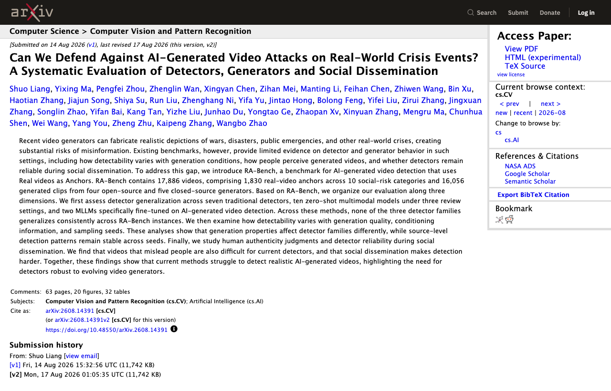

08 arXiv 게시일 2026.08.13
위기 영상 딥페이크, 탐지기 성능 흔들렸다

이 논문은 위기 상황의 가짜 영상이 실제로 얼마나 잘 걸러지는지 묻는다. 연구팀은 기존 평가가 전쟁, 재난, 공공비상 같은 사회적 고위험 장면을 충분히 다루지 못했다고 봤다. 그래서 실제 영상을 기준점으로 삼는 RA-Bench를 만들고 탐지기와 생성기, 사람 반응까지 함께 평가했다.
핵심 브리핑
연구팀은 RA-Bench를 제안했다. 이 벤치마크는 실제 영상을 anchor로 쓴다. 전체 규모는 17,886개 영상이다. 여기에는 실제 영상 anchor 1,830개가 들어간다. 범주는 10개 사회적 위험 카테고리다. 생성 영상은 16,056개다. 생성기는 오픈소스 4개와 폐쇄형 5개를 썼다.
평가는 세 축으로 진행했다. 먼저 탐지기의 일반화를 봤다. 대상은 전통적 탐지기 7개, 제로샷 멀티모달 모델 10개, AI 생성 영상 탐지용으로 미세조정한 MLLM 2개다. 결과는 분명했다. 세 계열 모두 RA-Bench 전반에서 일관되게 일반화하지 못했다.
연구팀은 생성 품질과 조건 정보, 샘플링 시드가 탐지에 미치는 영향도 봤다. 생성 속성은 탐지기 계열마다 다른 영향을 줬다. 반면 소스 수준의 탐지 패턴은 시드가 달라도 비교적 안정적이었다. 사람의 진짜 여부 판단도 조사했다. 사람을 속인 영상은 현재 탐지기도 함께 어려워했다. 소셜 유통이 붙으면 탐지는 더 어려워졌다.
방법과 결과
방법은 비교적 체계적이다. 연구팀은 실제 영상을 기준점으로 잡았다. 같은 위기 맥락을 유지한 채 생성 영상을 붙여 탐지기를 시험했다. 탐지기 평가는 전통적 방식과 제로샷 방식, 미세조정한 MLLM으로 나눴다.
결과는 탐지기의 약점을 세 방향에서 드러냈다. 첫째, 어떤 계열도 모든 상황에서 안정적으로 통하지 않았다. 둘째, 생성 품질과 조건 정보가 탐지 성능을 바꿨다. 셋째, 소셜 유통이 붙으면 탐지가 더 어려워졌다. 논문 발췌에는 탐지기별 세부 수치가 없다. 계열 간 우열도 이 발췌만으로는 확정할 수 없다.
업계의 움직임
공개 발췌에는 기업 도입 사례나 플랫폼 사업자의 공식 대응이 없다. 아직 공개된 반응은 확인되지 않았다.
시사점과 체크포인트
금융기업은 가짜 영상을 소비자 보호와 평판 리스크 관점에서 봐야 한다. 재난, 금융사고, 경영진 발언처럼 시장에 민감한 주제는 특히 취약하다. 단일 탐지 모델 점수만으로 게시 여부를 결정하면 놓치는 사례가 생길 수 있다.
- 검토 팀: 홍보, 고객센터, 정보보호, 이상징후 모니터링 조직
- 운영 점검: 소셜에서 확산 중인 영상의 원본 출처와 재유통 경로를 함께 보는가
- 운영 점검: 탐지 모델 결과와 사람 검토를 어떤 순서로 묶는가
- 선행 과제: 위기 유형별 대응 플레이북에 AI 생성 영상 항목 추가
- 주의점: 발췌에는 탐지기별 정밀도와 재현율 수치가 없어 제품 선택 근거로 바로 쓰기 어렵다
주요 용어
원문 정보
제목: Can We Defend Against AI-Generated Video Attacks on Real-World Crisis Events? A Systematic Evaluation of Detectors, Generators and Social Dissemination
게시일: 2026.08.13
출처 URL: https://arxiv.org/abs/2608.14391